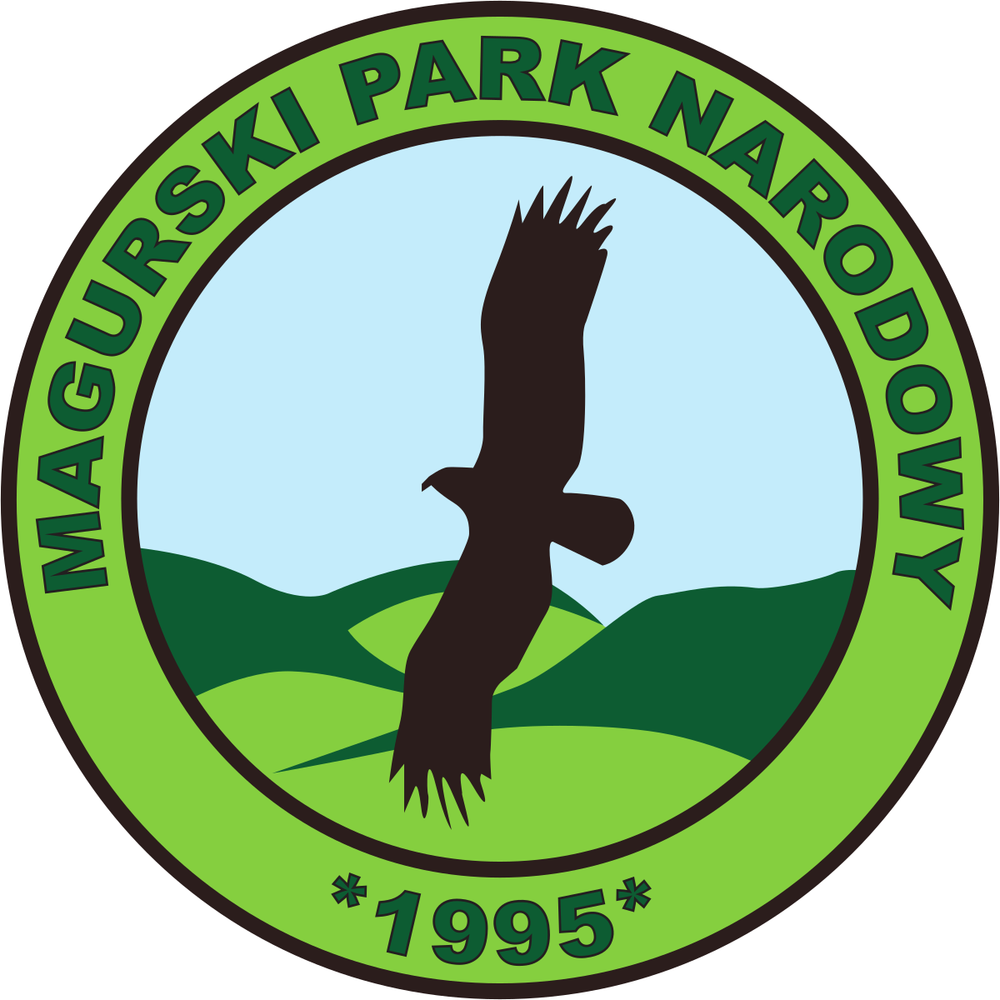

Magurski Park Narodowy
Magurski Park Narodowy powstał w roku 1995 i dziś obejmuje obszar 194,39 km². Leży na granicy województw małopolskiego i podkarpackiego, w samym sercu Beskidu Niskiego. Jego symbolem jest orlik krzykliwy, czyli gatunek dużego, wędrownego ptaka drapieżnego z rodziny jastrzębiowatych. Ponad 90% powierzchni parku zajmują lasy. Pod ochroną znajduje się przede wszystkim wyjątkowy w skali Karpat obszar przejścia pomiędzy Karpatami Zachodnimi a Karpatami Wschodnimi. Beskid Niski to obecnie najbardziej dzikie góry w Polsce. Mając olbrzymie szczęście, możecie tu spotkać wszystkie największe drapieżniki występujące w naszym kraju.